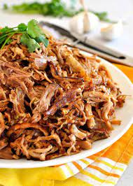

Carnitas

Crispy, Salty, and Delicious Carnitas
This recipe will turn the most average cut of pork butt from
your local Sam's Club into a delicious taco filling that you
can enjoy for weeks
This can be served at a party or just as a fun dinner for two
after a long Sunday watching football
Ingredients
- 3 pounds of Pork Shoulder
- 1 Tbsp of Paprika
- 1 Tbsp of Cumin
- 1 Tbsp of Ground Corriander
- 1 Tbsp of Salt
- 1 Tbps of Pepper
- 2 Cinammon Sticks
- 3 Bay Leaves
- 2 cups of Chicken Stock
Steps
- Cut the Pork Butt into 2-3 inch pieces
- Add Cumin, Paprika, Corriander, Salt and Pepper
into a bowl
- Preheat Oven to 350 degrees
- Place pork into Dutch Oven and cover with spice mix.
Mix Pork until each piece is covered with spices
- Pour in chicken stock and then add water till pork is 75% covered by water
- Place in over for 4 to 5 hours